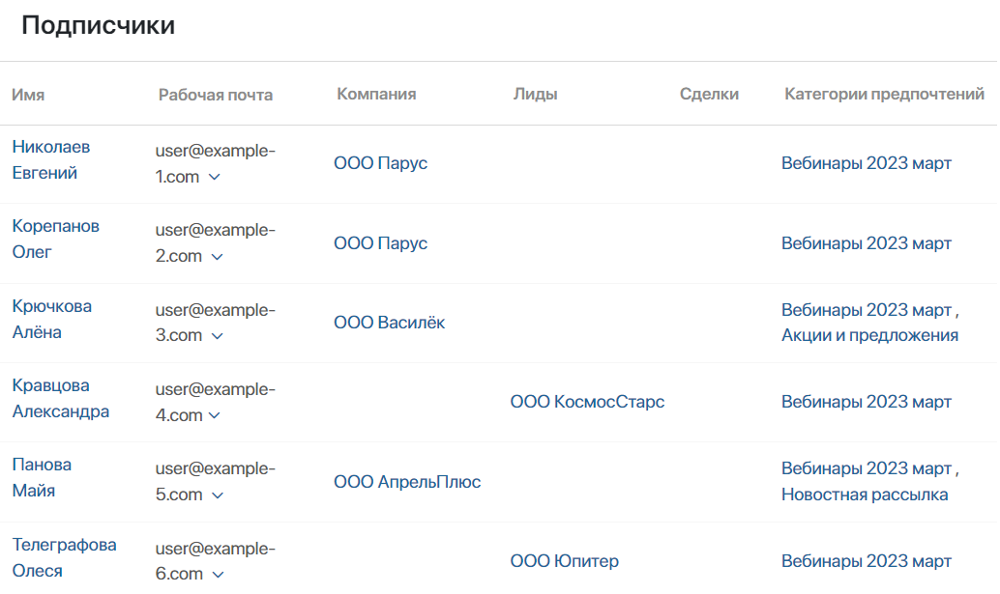
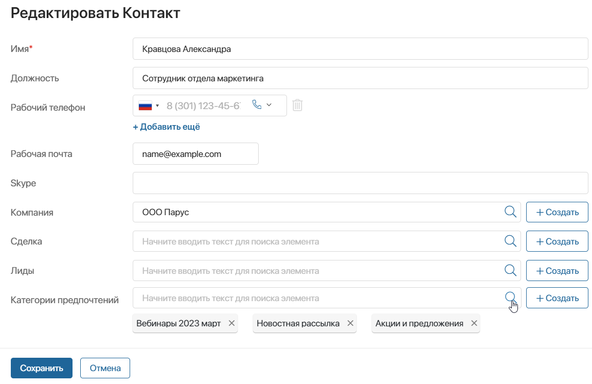
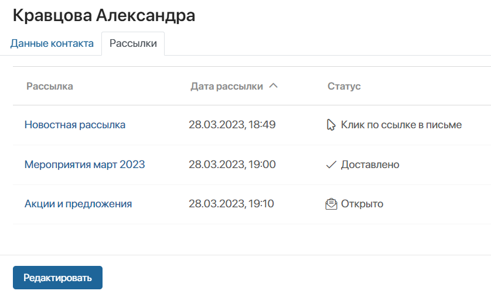
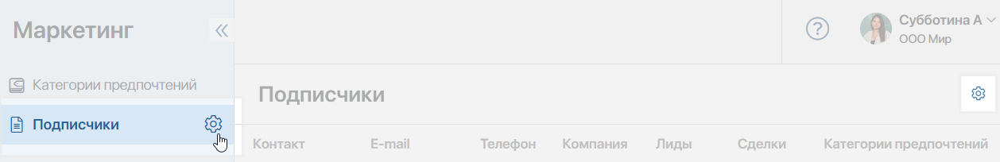
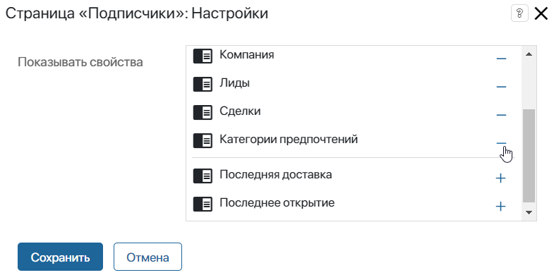
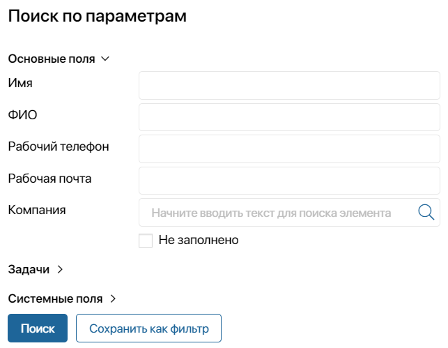

На странице Подписчики отображается список клиентов, которые дали согласие на получение рассылок. Подписчиками становятся все контакты из раздела CRM, у которых в карточке отмечены категории предпочтений и указана электронная почта. Также список подписчиков может быть получен из внешней системы с помощью методов API.
На основе этих данных можно формировать тематические сегменты подписчиков. Например, из всей базы подписчиков вы можете сформировать сегмент, в котором будут находиться только недавно созданные контакты, и разослать им приглашения на обучающий вебинар.
Все подписчики отображаются на странице приложения в виде таблицы, в которой указаны контактные данные, привязанные компании, контакты, сделки и лиды, категории предпочтений, а также последняя доставка письма и его открытие. О том, как изменить внешний вид таблицы, читайте ниже.

Если у нескольких контактов указана одинаковая электронная почта, в списке подписчиков будет отображаться последний созданный контакт. Администратор системы может изменить это условие, указав в настройках раздела другое правило для определения подписчика.
Добавление подписчика
Чтобы клиент стал подписчиком и мог получать рассылки, откройте карточку контакта и укажите его электронную почту, а также категории предпочтений.

Действия подписчика с письмами
Вы можете просмотреть, какие действия с письмами совершал определённый подписчик. Это поможет проанализировать степень активности клиента и его заинтересованность в содержании письма.
Для этого на форму просмотра элемента приложения Контакты необходимо добавить виджет Рассылки. Подробнее об этом читайте в статье «Шаблон формы».

В виджете Рассылки отображается таблица с названием, датой отправки и статусом рассылки, который показывает, какое действие совершил подписчик с письмом:
- Доставлено — письмо доставлено на почту подписчика;
- Открыто — подписчик открыл письмо;
- Клик по ссылке в письме — подписчик перешёл по ссылке, указанной в тексте письма;
- Ошибка доставки — письмо не было доставлено на почту подписчика.
Удаление подписчика
Перейдите в карточку контакта и удалите все категории предпочтений.
Контакты без указанной категории предпочтений не будут отображаться в списке подписчиков и не будут получать рассылки.
Также клиент может отписаться от рассылок самостоятельно через полученное письмо.
Настройка таблицы
Пользователи, включённые в группу Администраторы, могут настроить таблицу с данными о подписчиках, изменив список отображающихся в ней колонок.
Для этого:
- Нажмите на значок шестерёнки в правом верхнем углу страницы или в левом меню напротив названия страницы.

- В открывшемся меню выберите пункт Редактировать.
- Откроется окно, где вы сможете настроить отображение колонок таблицы. Чтобы скрыть колонку, нажмите на значок минус. Чтобы снова показать скрытую колонку, используйте значок плюс.

- Нажмите Сохранить.
Поиск подписчиков
В верхней части страницы Подписчики расположена строка поиска. С её помощью вы можете быстро найти нужного пользователя по имени.
Чтобы отфильтровать подписчиков по другим параметрам, например, по компании или электронной почте, нажмите на значок фильтра.

Если вы планируете несколько раз использовать один и тот же набор параметров для поиска, вы можете сохранить его как фильтр. Подробнее об этом читайте в статье «Поиск и фильтры».